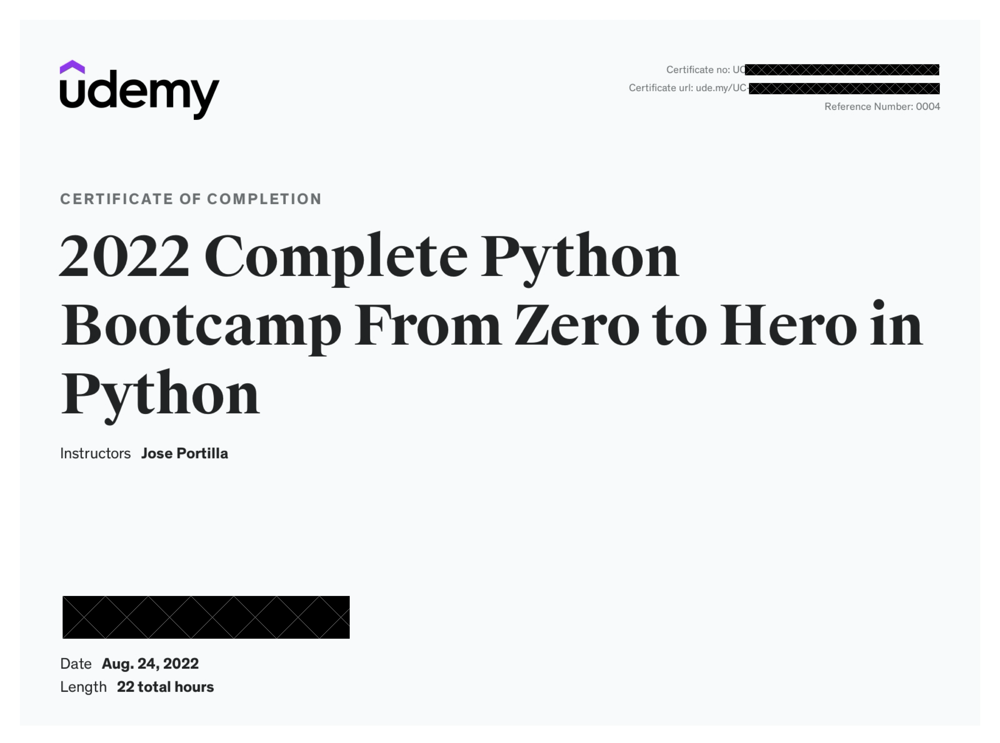
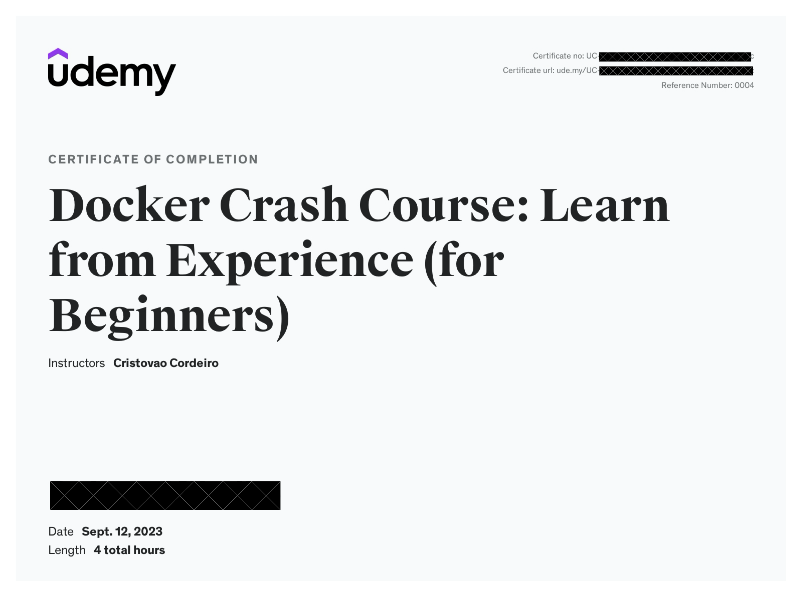
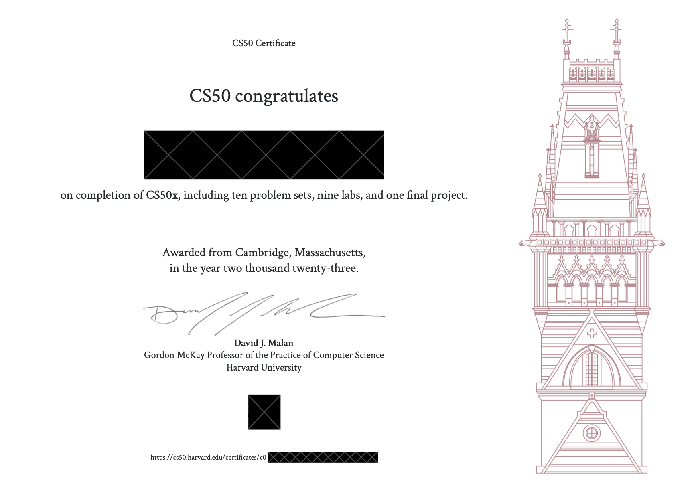
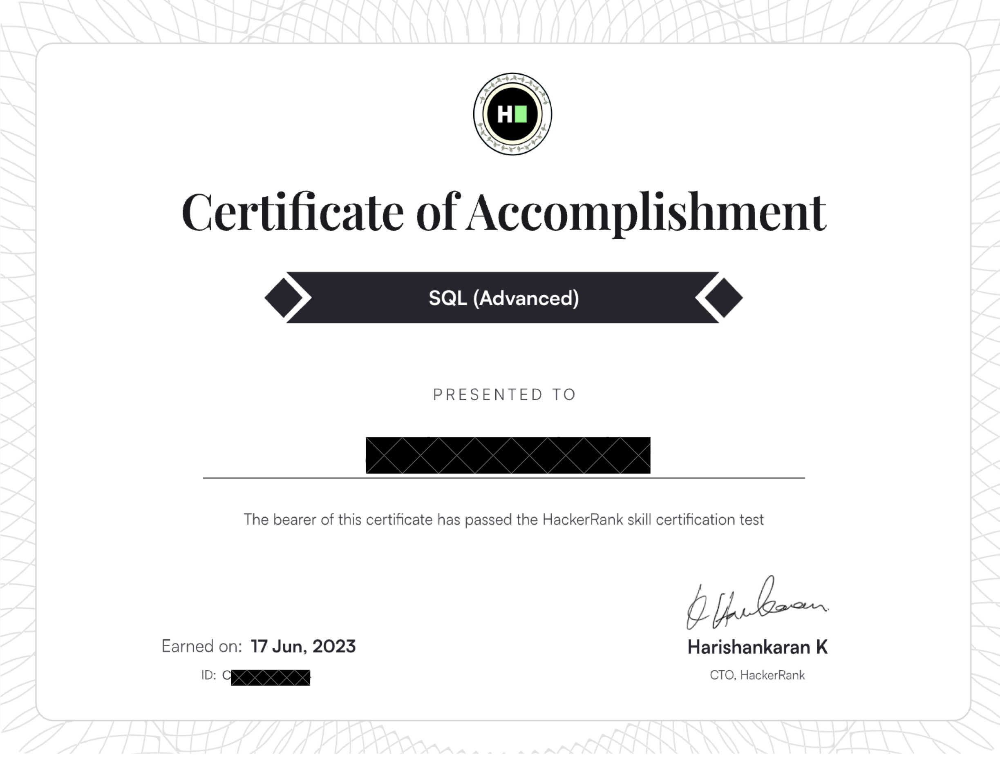
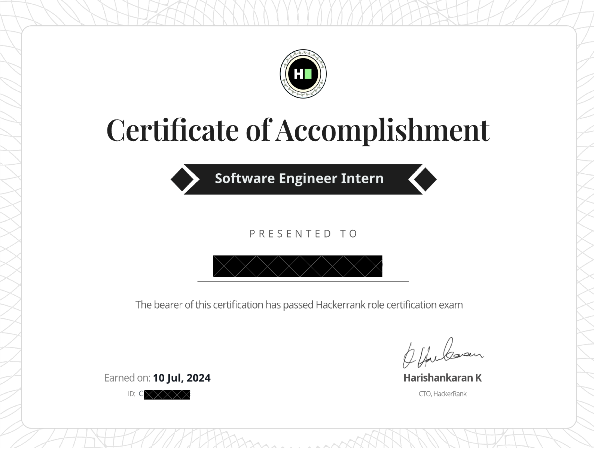

Menu
Home
Games
Projects
Certificates
Contact
Loading
...
Verifiable certificates are available, with name and certificate number, upon request.
Courses
Python Course (Udemy)

Basic Syntax
: Understanding Python syntax, variables, functions, arguments, scope, and data types.
Modules
: Importing and using modules, writing custom modules.
File I/O
: Reading from and writing to files.
Error Handling
: Using try-except blocks, raising exceptions.
Object-Oriented Programming
: Creating classes, inheritance, polymorphism.
Advanced Features
: Decorators, generators, context managers.
Libraries
: Using popular libraries like NumPy, Pandas, Matplotlib.
Web Scraping
: Extracting data from websites using the requests module, BeautifulSoup and Selenium.
Automation
: Automating tasks with Python scripts.
GUI Development
: Creating graphical user interfaces with Jupyter Notebooks widgets.
PIL
: Working with images using the Python Imaging Library (Pillow).
Content
: Three real-world project assignments and numerous tests and quizzes.
SQL Course (Udemy)
Introduction to SQL
: Understanding SQL syntax and writing basic queries.
Database Management
: Types of databases and database management systems, focusing on PostgreSQL.
CRUD Operations
: Create, Read, Update, Delete operations in SQL.
Data Analysis
: Using SQL for data analysis with real-world examples.
Advanced Queries
: Running advanced queries with string operations, comparison operations, and logical operators.
Aggregate Functions and Joins
: Analyzing data using aggregate functions with GROUP BY commands. Performing joins to combine data from multiple tables.
Subqueries
: Using subqueries to retrieve data from one or more tables.
Database Design
: Designing and optimizing databases for performance.
Content
: Mock questions and tips to ace SQL interviews and application of SQL skills to real-world projects.
Docker Course (Udemy)

Docker Fundamentals
: Introduction to Docker and containerization concepts.
Container Management
: Managing Docker containers using the CLI.
Docker Objects and Commands
: Understanding and using the most common Docker objects and commands.
Dockerfile Writing
: Writing Dockerfiles to build images.
Docker Image Creation and Management
: Creating, managing, and pushing Docker images to Docker Hub.
Docker Container Creation and Management
: Creating, starting, stopping, and managing Docker containers.
Docker Network Creation and Management
: Configuring Docker networks and managing container networking.
Docker Volume Creation and Management
: Using Docker volumes to manage container data.
Real-World Projects
: Applying Docker skills to real-world projects.
Harvard's CS50

Abstraction
: Learning to break down complex problems and systems into smaller, more manageable parts. This includes understanding how abstraction applies to both algorithms and data.
Algorithms
: Designing and analyzing algorithms for efficiency and effectiveness. You'll delve into concepts like sorting and searching, and the trade-offs between different algorithmic approaches. Time and Space complexity.
Data Structures
: Exploring essential data structures such as arrays, linked lists, stacks, queues, hash tables, and tries, and understanding how they are used to store and organize data efficiently.
Encapsulation
: Grasping the principles of encapsulation in programming, which involves bundling data with the methods that operate on that data, and understanding why it's crucial for writing maintainable code.
Resource Management
: Learning how to manage computer resources like memory and processing power. This includes understanding memory allocation, pointers, and dynamic memory management.
Security
: Introduction to computer security, covering basic principles like cryptography, network security, and the importance of writing secure code to protect against vulnerabilities.
Web Development
: Basics of web development using HTML, CSS, and JavaScript. Web frameworks like Flask are covered with how to build dynamic web applications.
Programming Languages
: Familiarity with multiple programming languages such as C, Python, SQL, and JavaScript, each used to demonstrate different concepts and solve various types of problems.
Problem-Solving
: Developing strong problem-solving skills through algorithmic thinking and structured approaches to tackling complex challenges.
Real-World Projects
: Applying learned concepts to practical projects that mimic real-world problems, reinforcing the theoretical knowledge with hands-on experience.
Final Project
: Creating and presenting a final programming project that showcases understanding of course materials and the ability to apply them in a practical context.
Skill Completion
Python Skill Test (HackerRank)
Scalar Types and Operators
: Understanding basic data types and operators.
Control Flow
: Using if-else, loops, and conditionals to control flow.
Strings
: Manipulating and working with strings.
Collections and Iteration
: Working with lists, dictionaries, sets, and tuples.
Modularity
: Writing functions and organizing code into modules.
Objects and Classes
: Understanding object-oriented programming concepts, including creating and using classes.
SQL Skill Test Beginner (HackerRank)
Basic SQL Queries
: Writing simple SELECT queries to retrieve data from single tables.
Filtering and Sorting
: Using WHERE clauses, ORDER BY, and LIMIT to filter and sort query results.
Aggregations
: Applying functions like COUNT, SUM, AVG, MIN, and MAX to aggregate data.
Joins
: Performing simple joins (INNER JOIN) to combine data from multiple tables.
Group By and Having
: Grouping data and filtering groups using the GROUP BY and HAVING clauses.
SQL Skill Test Intermediate (HackerRank)
Advanced Joins
: Mastering more complex joins such as LEFT JOIN, RIGHT JOIN, and FULL OUTER JOIN.
Subqueries
: Writing subqueries to perform more complex data retrievals and manipulations.
Set Operations
: Using UNION, UNION ALL, INTERSECT, and EXCEPT to combine results from multiple queries.
Aggregations and Window Functions
: Advanced use of aggregation functions and introduction to window functions for more complex calculations.
Data Modifications
: Writing INSERT, UPDATE, and DELETE statements to modify data in tables.
Indexing and Performance Tuning
: Understanding basic indexing and how to optimize query performance.
Examinations
SQL Skill Test Advanced (HackerRank)

Joins and Set Operations
: Mastery of complex joins (like CROSS JOIN) and set operations (UNION, INTERSECT, EXCEPT) to manipulate data across tables.
Subqueries
: Using advanced subqueries, including correlated subqueries, to solve intricate querying needs.
Query Optimization
: Enhancing performance through query optimization and analysis.
Common Table Expressions (CTEs)
: Simplifying complex queries and handling recursive queries with CTEs.
Window Functions
: Utilizing functions like ROW_NUMBER and RANK for advanced row-by-row calculations.
Software Engineer Intern (HackerRank)

Problem Solving:
solve coding problems using various algorithms and data structures.
SQL:
knowledge of SQL, including writing queries, database design, normalization, and optimization techniques.
Code Quality:
coding style, readability, and adherence to best practices.
Technical Communication:
ability to explain thought processes and solutions, demonstrating the ability to communicate technical concepts clearly.